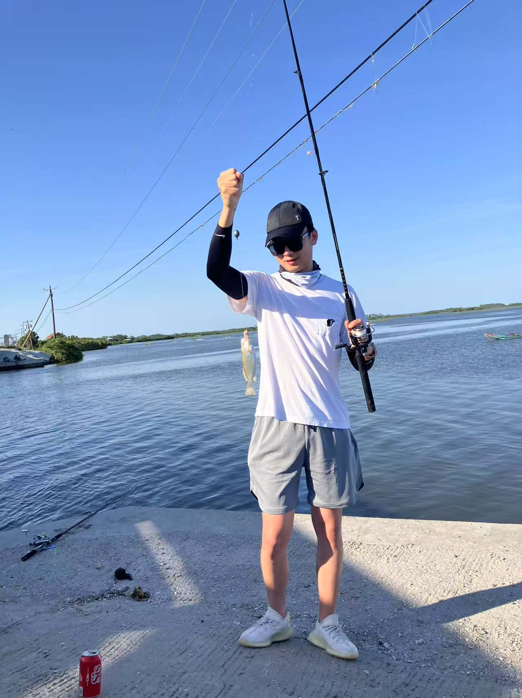
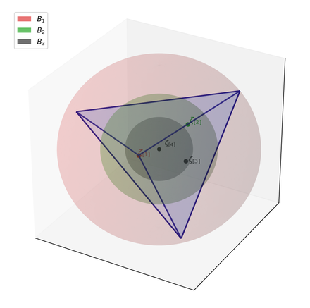
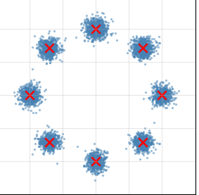
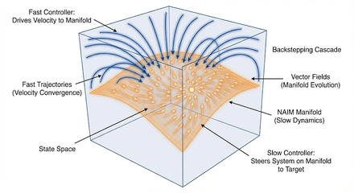
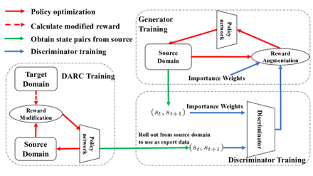
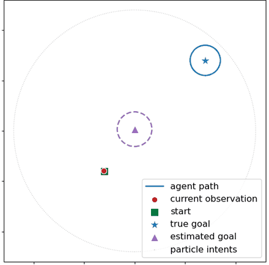
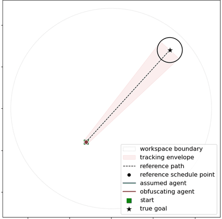
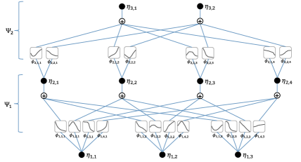

About
I am a PhD student in the Nonlinear Controls and Robotics group at the University of Florida, advised by Prof. Warren E. Dixon and coadvised by Dr. Dan P. Guralnik. My research bridges nonlinear control theory and modern machine learning.
I'm broadly interested in understanding machine learning systems through the lens of dynamical systems and Lyapunov stability. My work applies control-theoretic tools to problems in modern machine learning, aiming for methods that are both principled and practical.
Before joining UF for my PhD, I earned an M.S. in Computer Science from Johns Hopkins University and an M.S. in Mechanical Engineering from UF. I received my B.S. from Tongji University in Shanghai.
Beyond research. You'll likely find me by the water — a fisherman who enjoys the patience and calm of a good catch. I believe the best ideas come when you step away from the whiteboard.
Research Interests
News
- 2026“Quantifying Trade-Offs Between Stability and Goal-Obfuscation” accepted to IEEE CDC 2026.
- 2026“Effective Model Pruning” accepted to ICML 2026 as a Spotlight.
- 2026“Goal Inference with Rao-Blackwellized Particle Filters” accepted to IFAC World Congress 2026.
- 2026New preprint: “Riemannian Lyapunov Optimizer: A Unified Framework for Optimization.”
- 2026New preprint: “Energy Generative Modeling: A Lyapunov-based Energy Matching Perspective.”
- 2024“Off-Dynamics Reinforcement Learning” accepted to NeurIPS 2024.
Publications
Machine Learning
-

Effective Model Pruning: Measuring the Redundancy of Model Components
Given any importance scores over model components, how many can be dropped for free? The effective sample size of the score distribution yields an adaptive sparsity level with a provable bound on the loss change. -

Energy Generative Modeling: A Lyapunov-based Energy Matching Perspective
Sampling from an energy-based generative model is a control problem: KL as the Lyapunov function gives Langevin sampling a principled finite-step stopping rule — and opens the door to safety, with barrier functions for constrained generation. -

Riemannian Lyapunov Optimizer: A Unified Framework for Optimization
Optimizers turned into dynamical systems: training evolves on a Riemannian manifold under a Lyapunov certificate — recovering classic algorithms, and offering a blueprint and grammar for designing the optimizers of the future. -

Off-Dynamics Reinforcement Learning via Domain Adaptation and Reward Augmented Imitation
Deploying a source-trained policy under dynamics shift: DARAIL modifies rewards for domain adaptation, then transfers the policy via reward-augmented imitation learning so it reproduces the right trajectories in the target domain — with an error bound and gains on off-dynamics benchmarks.
Control
-

Goal Inference with Rao-Blackwellized Particle Filters
An RBPF can infer your agent's goal simply from observing its past trajectory. -

Quantifying Trade-Offs Between Stability and Goal-Obfuscation
Given an adversary trying to infer your goal, probabilistic control barrier functions (PCBFs) guarantee the information leakage never breaches a pre-defined privacy threshold — while still completing the tracking task. -

Lyapunov-Based Kolmogorov-Arnold Network (KAN) Adaptive Control
The first Lyapunov-based adaptive controller built on Kolmogorov-Arnold networks (KANs): real-time learning with asymptotic tracking guarantees, and — unlike MLP-based designs — interpretability, since the learned dynamics decompose into visualizable univariate functions.
Education
-
PresentPh.D. in Mechanical & Aerospace EngineeringUniversity of FloridaAdvisor: Prof. Warren E. Dixon · Nonlinear Control Theory, Machine Learning, Robotics
-
2024M.S. in Computer ScienceJohns Hopkins University
-
2022M.S. in Mechanical EngineeringUniversity of Florida
-
2020B.S. in Mechanical EngineeringTongji University